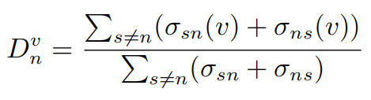
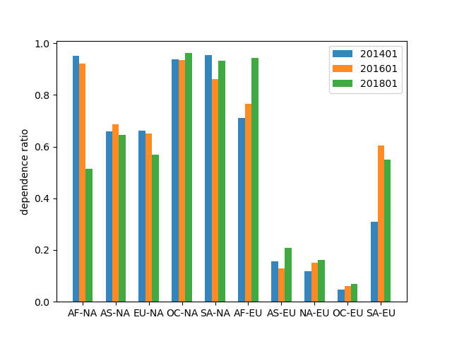

路由依赖性
我们定义一个指标` D_{n}^{v} `来衡量`n`对`v`的路由依赖，为从`n`出发和到达`n`的路径中穿越`v`的比例，可以通过下面的公式来计算：


在之前的研究中我们发现北美洲和欧洲传输洲际流量的最重要的大洲。因此我们关注这两个大洲，研究其他大洲对这两个洲的路由依赖。如上图所示展示了各个大洲对欧洲和北美洲的路由依赖。可以看出，除了非洲以外，所有其他大洲对北美洲的依赖程度要比欧洲要强。非洲、北美洲和大洋洲对欧洲的依赖在逐年上升，欧洲对北美洲的依赖在逐年下降。